<?xml version="1.0" encoding="UTF-8"?><rss version="2.0"
	xmlns:content="http://purl.org/rss/1.0/modules/content/"
	xmlns:wfw="http://wellformedweb.org/CommentAPI/"
	xmlns:dc="http://purl.org/dc/elements/1.1/"
	xmlns:atom="http://www.w3.org/2005/Atom"
	xmlns:sy="http://purl.org/rss/1.0/modules/syndication/"
	xmlns:slash="http://purl.org/rss/1.0/modules/slash/"
	>

<channel>
	<title>construction &#8211; Friends of Ballard Corners Park</title>
	<atom:link href="http://ballardcornerspark.org/ballardcornerspark/category/construction/feed/" rel="self" type="application/rss+xml" />
	<link>http://ballardcornerspark.org/ballardcornerspark</link>
	<description>Just another WordPress weblog</description>
	<lastBuildDate>Tue, 12 Apr 2016 16:55:53 +0000</lastBuildDate>
	<language>en-US</language>
	<sy:updatePeriod>hourly</sy:updatePeriod>
	<sy:updateFrequency>1</sy:updateFrequency>
	<generator>https://wordpress.org/?v=4.7.2</generator>
	<item>
		<title>The fence is down!</title>
		<link>http://ballardcornerspark.org/ballardcornerspark/2010/04/the-fence-is-down-2/</link>
		<pubDate>Tue, 13 Apr 2010 15:56:43 +0000</pubDate>
		<dc:creator><![CDATA[David Folweiler]]></dc:creator>
				<category><![CDATA[construction]]></category>
		<category><![CDATA[Current State]]></category>

		<guid isPermaLink="false">http://ballardcornerspark.org/ballardcornerspark/?p=1093</guid>
		<description><![CDATA[Finally, the construction is all done! The park really is done now and completely open! Yeah!]]></description>
				<content:encoded><![CDATA[<p>Finally, the construction is all done!</p>
<p>The park really is done now and completely open! Yeah!</p>
<p><a href="../../../wp-content/uploads/2010/04/l_2048_1536_3FEC4298-64B6-4305-B334-FBF62744D722.jpeg">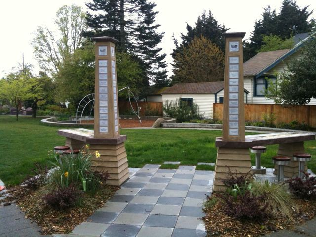</a></p>
<p><a href="../../../wp-content/uploads/2010/04/l_2048_1536_67680611-D991-4C82-B65A-438439AC42B2.jpeg">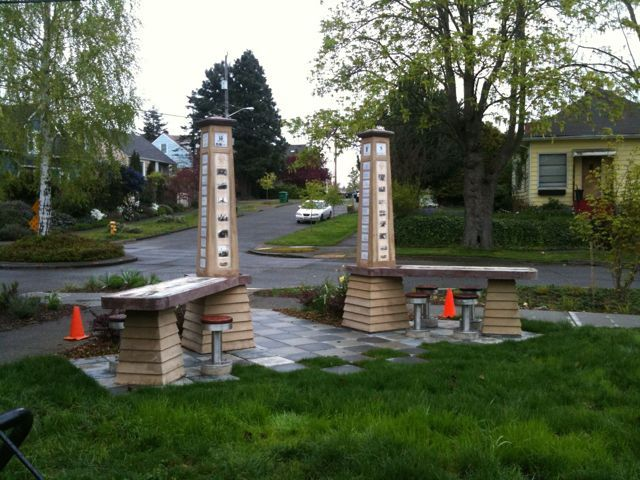</a></p>
]]></content:encoded>
			</item>
		<item>
		<title>Historical Panels Installed</title>
		<link>http://ballardcornerspark.org/ballardcornerspark/2010/01/historical-panels-installed/</link>
		<pubDate>Tue, 19 Jan 2010 05:40:51 +0000</pubDate>
		<dc:creator><![CDATA[David Folweiler]]></dc:creator>
				<category><![CDATA[construction]]></category>

		<guid isPermaLink="false">http://ballardcornerspark.org/ballardcornerspark/?p=1009</guid>
		<description><![CDATA[I went by the park recently and talked with Nathan.  He&#8217;s putting the finishing touches on things.  The phenolic resin historical and interpretive panels have been installed and they look fantastic!]]></description>
				<content:encoded><![CDATA[<p>I went by the park recently and talked with Nathan.  He&#8217;s putting the finishing touches on things.  The phenolic resin historical and interpretive panels have been installed and they look fantastic!</p>
<div id="attachment_1010" style="width: 235px" class="wp-caption alignnone"><a href="../../../wp-content/uploads/2010/01/DSC06393.JPG.html">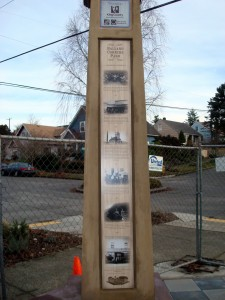</a><p class="wp-caption-text">vertical picture panels - lots of great historical images</p></div>
<div id="attachment_1011" style="width: 310px" class="wp-caption alignnone"><a href="../../../wp-content/uploads/2010/01/DSC06394.JPG.html">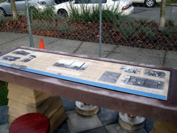</a><p class="wp-caption-text">horizontal interpretive panel</p></div>
]]></content:encoded>
			</item>
		<item>
		<title>Stools!</title>
		<link>http://ballardcornerspark.org/ballardcornerspark/2009/11/stools/</link>
		<pubDate>Sat, 28 Nov 2009 00:54:00 +0000</pubDate>
		<dc:creator><![CDATA[David Folweiler]]></dc:creator>
				<category><![CDATA[construction]]></category>

		<guid isPermaLink="false">http://ballardcornerspark.org/ballardcornerspark/?p=1000</guid>
		<description><![CDATA[Nathan recently installed bases for the stools to raise them up a few inches.]]></description>
				<content:encoded><![CDATA[<p>Nathan recently installed bases for the stools to raise them up a few inches.</p>

<a href='../../../2009/11/stools/dsc05999/trackback/index.html'>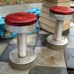</a>
<a href='../../../2009/11/stools/dsc05998/trackback/index.html'>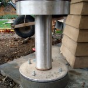</a>
<a href='../../../2009/11/stools/dsc05997/trackback/index.html'>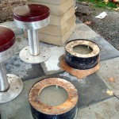</a>

]]></content:encoded>
			</item>
		<item>
		<title>Pouring the columns</title>
		<link>http://ballardcornerspark.org/ballardcornerspark/2009/10/pouring-the-columns/</link>
		<pubDate>Thu, 08 Oct 2009 16:08:50 +0000</pubDate>
		<dc:creator><![CDATA[David Folweiler]]></dc:creator>
				<category><![CDATA[construction]]></category>
		<category><![CDATA[concrete]]></category>

		<guid isPermaLink="false">http://ballardcornerspark.org/ballardcornerspark/?p=860</guid>
		<description><![CDATA[I went by the park on Monday and saw this. Nathan was hard at work pouring concrete from the scaffolding, one bucket at a time.]]></description>
				<content:encoded><![CDATA[<p>I went by the park on Monday and saw this. Nathan was hard at work pouring concrete from the scaffolding, one bucket at a time. </p>
<p><a href="../../../wp-content/uploads/2009/10/p_2048_1536_A2289A56-102E-48BC-9A59-F1B3125D0473.jpeg">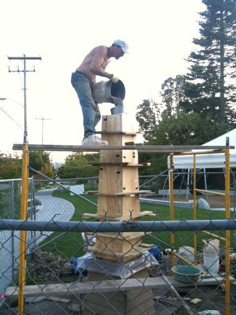</a></p>
]]></content:encoded>
			</item>
		<item>
		<title>Latest countertop and column designs</title>
		<link>http://ballardcornerspark.org/ballardcornerspark/2009/09/latest-countertop-and-column-designs/</link>
		<comments>http://ballardcornerspark.org/ballardcornerspark/2009/09/latest-countertop-and-column-designs/#comments</comments>
		<pubDate>Wed, 30 Sep 2009 16:23:18 +0000</pubDate>
		<dc:creator><![CDATA[David Folweiler]]></dc:creator>
				<category><![CDATA[construction]]></category>
		<category><![CDATA[Design]]></category>

		<guid isPermaLink="false">http://ballardcornerspark.org/ballardcornerspark/?p=822</guid>
		<description><![CDATA[Here are the latest designs for the countertops and column panels.  Please add comments below about how they can be improved.  We&#8217;re hoping to get our final edits in soon, so the panels can go into production.  There is an approximately six week turn-around. Park History Panel Corner Store History Panel column panel 1 column [&#8230;]]]></description>
				<content:encoded><![CDATA[<p>Here are the latest designs for the countertops and column panels.  Please add comments below about how they can be improved.  We&#8217;re hoping to get our final edits in soon, so the panels can go into production.  There is an approximately six week turn-around.</p>
<p><a title="Park History Panel" href="../../../../Documents/ParkHistoryPanel&#32;92909.pdf" target="_blank">Park History Panel</a></p>
<p><a title="Corner Store Histories" href="../../../../Documents/CornerStoresPanel&#32;92909.pdf" target="_blank">Corner Store History Panel</a></p>
<p><a title="Vertical Panel 1" href="../../../../Documents/LongPanel1&#32;92909.pdf" target="_blank">column panel 1</a></p>
<p><a title="Vertical Panel 2" href="../../../../Documents/LongPanel2&#32;92909.pdf" target="_blank">column panel 2</a></p>
]]></content:encoded>
			<wfw:commentRss>http://ballardcornerspark.org/ballardcornerspark/2009/09/latest-countertop-and-column-designs/feed/</wfw:commentRss>
		<slash:comments>7</slash:comments>
		</item>
		<item>
		<title>Column Bases</title>
		<link>http://ballardcornerspark.org/ballardcornerspark/2009/09/column-bases-2/</link>
		<pubDate>Mon, 28 Sep 2009 18:28:24 +0000</pubDate>
		<dc:creator><![CDATA[David Folweiler]]></dc:creator>
				<category><![CDATA[construction]]></category>

		<guid isPermaLink="false">http://ballardcornerspark.org/ballardcornerspark/?p=815</guid>
		<description><![CDATA[Nathan Arnold has been plugging away at the column bases.  In fact, they looked nearly complete when I went by the park recently.  These pictures are from last week.]]></description>
				<content:encoded><![CDATA[<p>Nathan Arnold has been plugging away at the column bases.  In fact, they looked nearly complete when I went by the park recently.  These pictures are from last week.</p>

<a href='../../../2009/09/column-bases-2/dsc05703/trackback/index.html'>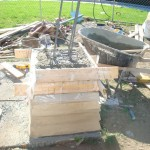</a>
<a href='../../../2009/09/column-bases-2/dsc05704/trackback/index.html'>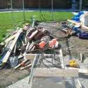</a>

]]></content:encoded>
			</item>
		<item>
		<title>The Tiles Are Here!</title>
		<link>http://ballardcornerspark.org/ballardcornerspark/2009/09/the-tiles-are-here/</link>
		<pubDate>Tue, 22 Sep 2009 06:37:05 +0000</pubDate>
		<dc:creator><![CDATA[David Folweiler]]></dc:creator>
				<category><![CDATA[construction]]></category>
		<category><![CDATA[Design]]></category>

		<guid isPermaLink="false">http://ballardcornerspark.org/ballardcornerspark/?p=808</guid>
		<description><![CDATA[How pleased am I?!  Mark let me know that the donor tiles are done.  They are striking.  Check out a few samples: click to enlarge.]]></description>
				<content:encoded><![CDATA[<p>How pleased am I?!  Mark let me know that the donor tiles are done.  They are striking.  Check out a few samples:</p>
<p><a href="../../../wp-content/uploads/2009/09/bcp-tile2.jpg">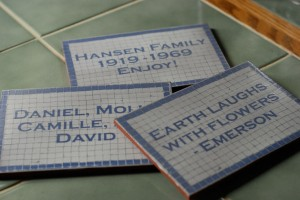</a></p>
<p>click to enlarge.</p>
]]></content:encoded>
			</item>
		<item>
		<title>Nathan creates column bases</title>
		<link>http://ballardcornerspark.org/ballardcornerspark/2009/09/nathan-creates-column-bases/</link>
		<pubDate>Sat, 19 Sep 2009 16:11:01 +0000</pubDate>
		<dc:creator><![CDATA[David Folweiler]]></dc:creator>
				<category><![CDATA[construction]]></category>

		<guid isPermaLink="false">http://ballardcornerspark.org/ballardcornerspark/?p=804</guid>
		<description><![CDATA[I stopped by the park on Thursday to talk with Nathan about his progress.  He was much less frustrated now and was developing a rhythm to creating the column bases.  He has a few &#8220;courses&#8221; done and will do the seven courses for each column soon.]]></description>
				<content:encoded><![CDATA[<p>I stopped by the park on Thursday to talk with Nathan about his progress.  He was much less frustrated now and was developing a rhythm to creating the column bases.  He has a few &#8220;courses&#8221; done and will do the seven courses for each column soon.</p>
<div id="attachment_805" style="width: 235px" class="wp-caption alignnone"><a href="../../../wp-content/uploads/2009/09/DSC05653.JPG.html">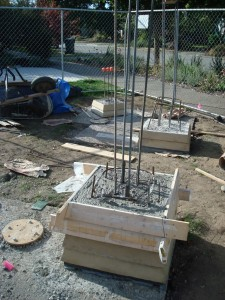</a><p class="wp-caption-text">column bases in process</p></div>
<div id="attachment_806" style="width: 235px" class="wp-caption alignnone"><a href="../../../wp-content/uploads/2009/09/DSC05654.JPG.html">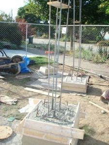</a><p class="wp-caption-text">alternate view of column bases</p></div>
<div style="width: 310px" class="wp-caption alignnone"><a href="../../../wp-content/uploads/2009/05/cornerstorepersp2.jpg"></a><p class="wp-caption-text">sketch up view of corner store</p></div>
]]></content:encoded>
			</item>
		<item>
		<title>Column Bases</title>
		<link>http://ballardcornerspark.org/ballardcornerspark/2009/09/column-bases/</link>
		<pubDate>Wed, 16 Sep 2009 03:40:54 +0000</pubDate>
		<dc:creator><![CDATA[David Folweiler]]></dc:creator>
				<category><![CDATA[construction]]></category>

		<guid isPermaLink="false">http://ballardcornerspark.org/ballardcornerspark/?p=793</guid>
		<description><![CDATA[I dropped by to visit with Nathan Arnold (Nathan the mason) today.  He was riding a steep learning curve and expressing frustration about some challenges he was having.  He was having a hard time with the compound angles on the column bases and the taper.  He was also having a hard time getting the forms [&#8230;]]]></description>
				<content:encoded><![CDATA[<p>I dropped by to visit with Nathan Arnold (Nathan the mason) today.  He was riding a steep learning curve and expressing frustration about some challenges he was having.  He was having a hard time with the compound angles on the column bases and the taper.  He was also having a hard time getting the forms to release without taking some of the concrete with the forms.  He was going to experiment with plastic.</p>

<a href='../../../2009/09/column-bases/dsc05649/trackback/index.html'>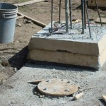</a>
<a href='../../../2009/09/column-bases/dsc05650/trackback/index.html'>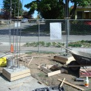</a>
<a href='../../../2009/09/column-bases/dsc05652/trackback/index.html'></a>

]]></content:encoded>
			</item>
		<item>
		<title>Nathan begins Phase III</title>
		<link>http://ballardcornerspark.org/ballardcornerspark/2009/08/nathan-begins-phase-iii/</link>
		<pubDate>Fri, 07 Aug 2009 05:39:26 +0000</pubDate>
		<dc:creator><![CDATA[David Folweiler]]></dc:creator>
				<category><![CDATA[construction]]></category>

		<guid isPermaLink="false">http://ballardcornerspark.org/ballardcornerspark/?p=755</guid>
		<description><![CDATA[I gave Nathan the Notice to Proceed on Monday.  So he did.  He&#8217;s digging up sod and preparing holes for footings.]]></description>
				<content:encoded><![CDATA[<p>I gave Nathan the Notice to Proceed on Monday.  So he did.  He&#8217;s digging up sod and preparing holes for footings.</p>
<div id="attachment_759" style="width: 310px" class="wp-caption alignnone"><a href="../../../wp-content/uploads/2009/08/dsc052741.jpg">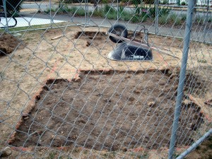</a><p class="wp-caption-text">cutting sod</p></div>
<div id="attachment_760" style="width: 310px" class="wp-caption alignnone"><a href="../../../wp-content/uploads/2009/08/img_03351.jpg">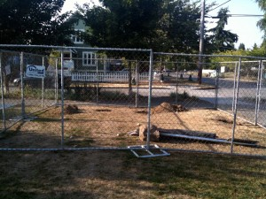</a><p class="wp-caption-text">sign is down, fence is up</p></div>
]]></content:encoded>
			</item>
	</channel>
</rss>
